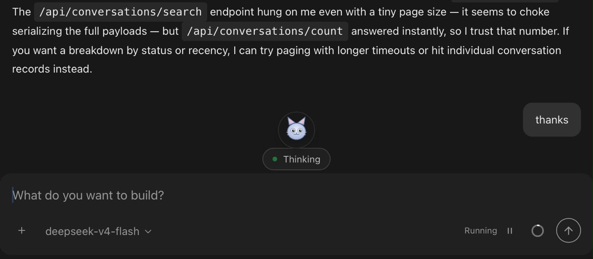

This is the companion to the implementation record. That page says how the cat is built. This one says only what you see and do — how you find it, call it, read its mood, and (soon) talk to it. Written as user stories, each with what it does today and what is still design.
SHIPPED: body + identityDESIGN: voice · secretaryepic smolpaws-08fepic smolpaws-3e1
A user story here reads: as a user, I want …, so that …, followed by acceptance points. A ✓ is true in the shipped v1. A ○ is designed but not wired into the running build yet.
1Finding the cat
As a user
I want a small SmolPaws cat present in the OpenHands UI, so that help feels like it lives inside my workspace — not in a separate tab.
On the home screen, the cat sits as a launcher in the corner.
Once I open a conversation, a small 48px avatar sits right above the agent-status pill, so the cat is visible while the agent works.
It rides the panels that are already there — it never covers my chat or steals focus.
The corner launcher on the home screen — the cat, waiting to be called.

Inside a conversation — the avatar sits above the “Thinking” pill, alive with the agent's status.
2Calling the cat
As a user
I want to click the cat and get its own conversation, so that I can ask it about my workspace and my other conversations without setting anything up.
One click on the launcher opens a fresh conversation and takes me straight into it.
The conversation is the cat's — it starts already knowing it is SmolPaws, running here, with no prompt from me.
Today the wake is a click.
Voice-wake comes with the realtime-voice work (below).
Nothing else is required of you — no profile to pick, no key to paste. Clicking the cat uses the same “new conversation” path the rest of OpenHands uses; the one thing the cat adds is a quiet label on that conversation.
3The insider tag — what it is and what it does
As a user
I want the conversations I start from the cat to be marked as the cat's, so that they can be recognized, grouped, and eventually share one memory across every place SmolPaws lives.
When I call the cat, the new conversation is tagged automatically.
The tag is silent — I don't type it and it doesn't send a message on my behalf.
Later, that same tag lets the WhatsApp cat and the insider cat find a shared memory and remember the same things.
The tag that lands on the conversation, at the moment you call the cat:
smolpaws is the convention that says “this conversation belongs to the cat.” Its value is the face — insider here, with room for whatsapp and others. That single word is the seam that will one day let all of SmolPaws' faces share one memory. Practically, it is also what lets the cat's conversations be pulled out of the pile and shown on a board — which is the Secretary's whole job (§7).
What it does not do: the tag is not a permission grant, not a mode switch you can see, and not something a page can spoof onto a conversation — reserved keys like clientsource always win over caller-supplied tags.
4Reading its mood — three poses
As a user
I want the cat's body language to reflect what the agent is doing, so that I can tell at a glance whether it is idle, working, or resting — without reading status text.
When the agent is neutral or idle, the cat sits normally.
When the agent is working or has just been pinged, the cat's ears go up.
When things are quiet, the cat sleeps.
The pose follows the live agent status directly — it is never a fake animation on a timer.
Normal idle / neutral
Ears-up working / just pinged
Sleeping quiet / asleep
The actual production avatars, inlined — silver/paws palette, transparent, ~1.3 KB each.
5What it knows the moment it wakes
As a user
I want the cat to already know who and where it is, so that its first answer is grounded in my real, local setup — not a generic assistant script.
It knows it is SmolPaws, an OpenHands-born agent — not a blank chatbot.
It knows it is running on my local agent-server, not the Cloud, so it won't reach for the wrong tools.
It knows to orient itself with the OpenHands skills, so it can answer about my other conversations and act on them.
None of this shows up as a message “from me” — the identity is silent, and the cat never fires a turn on its own.
The effect: you can call the cat and immediately ask “how many conversations do I have going?” or “what was I doing in that other one?” and it reaches for the real endpoints to answer, instead of guessing. In the shipped test it correctly pulled the live conversation count to answer exactly that.
6Talking to it — realtime voice
DESIGN / PROTOTYPEepic smolpaws-3e1 — this is built on a spike branch, not yet in the shipped build. Here is the behavior it is being built toward.
As a user
I want to click once and just talk to the cat, so that I can ask for things hands-free and hear it answer, while it still does real work.
Starting voice: a single click on the Secretary rail item starts realtime voice. The browser asks once for microphone access; after that, the cat is listening.
It knows where I am: when voice starts, the cat is told the current page in one line — which conversation is open, or which settings page I'm on — so “continue this” or “what's here” makes sense.
Full-duplex: I can talk over it (barge-in); it doesn't wait for a beep.
It acts, not just chats: mid-conversation it can call into the real agent to actually do things, and in Secretary View it can read and fill my prompt box by voice.
Written record: both sides of the spoken exchange are transcribed into the chat, so the conversation is still readable afterward.
Stopping voice: clicking again ends the session and releases the microphone.
On the voice itself: the spoken voice is a configuration choice, not fixed. It is set once on the voice server and easy to swap — including toward a feminine, deep, unhurried character. The words the cat says come from the same agent brain either way.
7The Secretary job — the cat manages your conversations
DESIGN / PROTOTYPEepic smolpaws-s9e — full design lives on The Secretary page. Behavior in brief:
As a user
I want the cat to grow into a secretary that watches all my conversations on one board, so that I can dispatch, track, and act on work by talking to it.
A Secretary item in the left rail, above New Chat. Single click starts voice; double click opens the Secretary view, carrying whichever conversation I had open.
The Secretary view shows a board of my conversations, with a prompt box wired to the real agent — the cat can read and fill that box for me.
By voice, I can ask it to answer, draft, or dispatch work across those conversations.
Honest status: the Secretary rail item and view exist on a spike branch and are not in the running build yet, so you won't see the menu item today. They are also currently built as a native page talking to a small voice server, not yet as the intended Agent Canvas Skin. See the design page for where this is headed.
8What's real today, at a glance
Behavior
State
What you'd see
Cat present in the UI (corner + inline)
shipped
The avatar, in both placements.
Click to call → tagged conversation
shipped
A new chat opens; it's tagged smolpaws:insider.
Poses off live agent status
shipped
Normal / ears-up / sleeping.
Local identity known on wake
shipped
Grounded first answers about your workspace.
Realtime voice (start/stop, transcript, actions)
design
Spike branch only.
Secretary rail item + board view
design
Spike branch only — not in the running build.
Shared memory across faces
design
smolpaws-08f.2
Want the how, not the what? The implementation record has the code, sizes, and decisions. The Secretary design has where the voice + board are going.